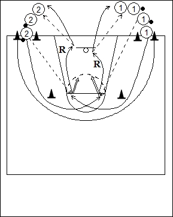

Catégorie : SHOOTS (Sh-005)
Déroulement
- Deux files de joueurs à une baseline. Deux ballons dans chaque file. Le premier joueur de la file 1 ne possède pas de ballon.
- Le premier joueur de la file 1 contourne le premier cône et reçoit la passe du premier joueur de la file 2 dans le demi-cercle des lancers-francs. Il effectue un jump shoot. C’est maintenant le premier joueur de la file 2 qui contourne le cône situé de son côté et reçoit le ballon du deuxième joueur de la file 1 pour un jump shoot. Et ainsi de suite.
- Chaque joueur réalise son propre rebond et change de file.
Coaching points
- Insister sur la qualité du shoot après réception soit en un temps, soit en pivot sur l’inside foot.
- On peut aussi demander une feinte de shoot puis un dribble de dégagement suivi d’un shoot.